We have developed relationships between the radius, luminosity and temperature of stars (Equation 11.1). Since the three are related, not all combinations are possible. Let’s see what we can expect to find when we look at real stars.
Stars have very wide ranges of luminosity, so it will be helpful to work with the logarithm of Equation 11.1.
\[\begin{align}
L &= 4\pi R^2 \sigma T^4 \\
\log_{10} L &= \log_{10}(4\pi\sigma) + 2\log_{10}(R) + 4\log_{10}T
\end{align}\]
We can plot a graph of \(y=\log_{10} L\) against \(x=-\log_{10} T\) for some value of \(R,\) and we should get a straight line.
We will see shortly why there is a negative sign
Code
import numpy as npfrom numpy import linspace, logspace, log10, pifrom matplotlib import pyplot as pltplt.figure(dpi=300)sigma =5.671e-8for r in [1e10, 5e9, 1e9, 5e8]: # radius, m T=logspace(log10(1000),log10(20000),100) L=4.0*pi*sigma*r**2*T**4#L = 10**(log10(4.0*pi*sigma) + 2*log10(r) + 4*log10(T)) plt.loglog(T,L, label=f'R={r:3.0e} m')#plt.plot(-log10(T), log10(L), label=f'r={r:3.0e} m')plt.xlim(plt.xlim()[::-1])plt.xlabel('$T$ [K]')plt.ylabel('$L$ [W]')plt.title('Luminosity - temperature')plt.grid(True,which='both',alpha=0.4)plt.legend();
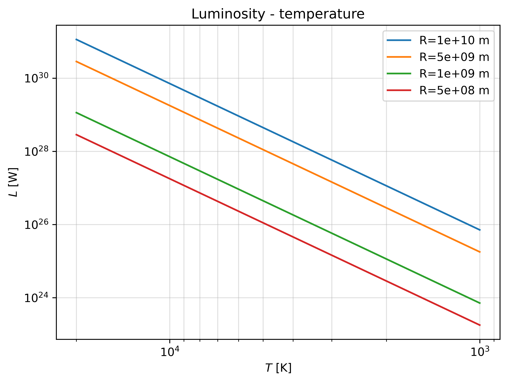
We see that for each radius \(R\) there is a straight line relationship when plotted on logarithmic axes.
Lower radii lie on lines toward the bottom of the plot.
Where do stars fall on this plot?
3.1 Hertzsprung and Russell
Two astronomers independently devised ways to determine the luminosity of stars - Ejnar HERTZSPRUNG (Denmark 1873 – 1967) - Henry Norris RUSSELL (USA, 1877 – 1957)
They constructed the plot now known as a Hertzsprung-Russell Diagram universally called an HR-Diagram for short
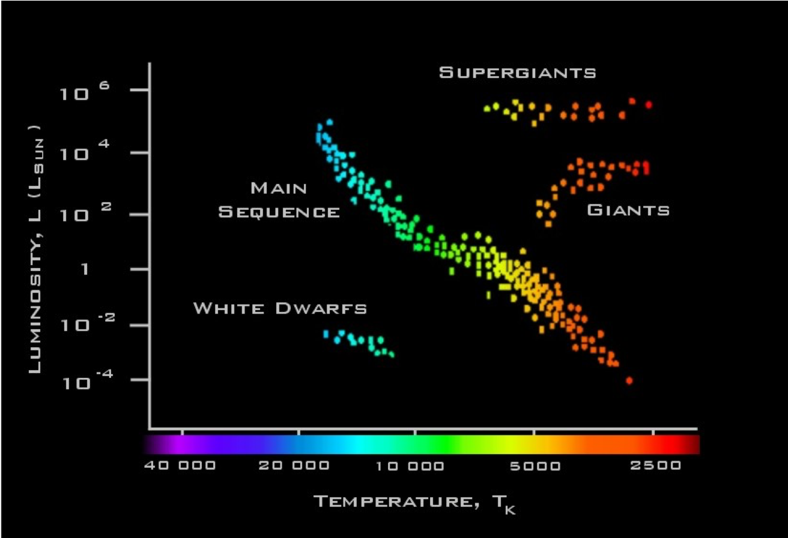
HR diagram Luminosity vs Temperature
Stars are found to cluster in distinct areas of the HR diagram
80% to 90% of stars lie on a strip called the Main Sequence
There are other branches of stars: White Dwarfs, Giants and Supergiants
Remember that the temperature (x-axis) decreases as we go from left to right
We use the HR-diagram to understand stellar evolution
Why are we justified in giving the names “dwarfs” and “giants” to these classes?
Over 1.3 billion stars contained in Gaia Data Release 2
Note the colour scale is non-linear - white/yellow regions must be more populated
Axes are colour index (\(G_{BP} - G_{RP}\) Blue - Red magnitude) vs absolute magnitude (\(M_G\)): We know these are related to temperature and luminosity
We can see the main sequence, giants, and white dwarfs clearly
There are other less populated clusters too: we will see what they mean for stellar evolution
Here is an annotated HR diagram showing temperature and luminosity along with magnitude and colour index
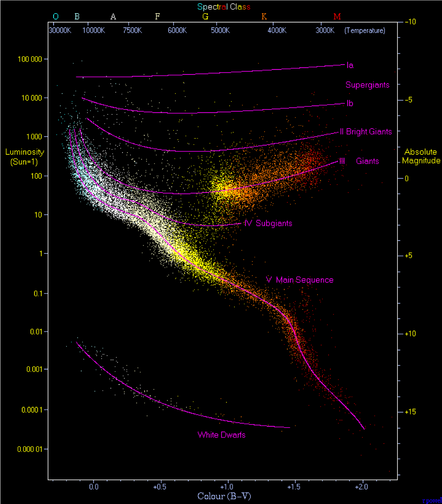
HR L T
4 Interpretation of the HR diagram
Only certain combinations of luminosity and temperature are allowed
The HR diagram shows stars with a wide range of ages.
Most stars sit on the main sequence
Let’s assume that stars move around on the HR diagram, from one class to another, as as they evolve
What does this tell us?
We are looking at a snapshot of the stellar population
Stars follow ‘tracks’ on the HR diagram over their lifetime
Clusters in the HR diagram are stars at similar stages of their lives
The number of stars in each part of the diagram is proportional to the duration of that stage of their evolution
5 The Main Sequence
The main sequence is the most populated part of the HR diagram (80-90% of stars). We can deduce that stars spend most of their lives on the main sequence.
The main sequence has most variation from top-left to botton-right, along a line of roughly constant radius. (This is not exact as the is a range of stellar radii)
The top-left blue stars are hotter and more luminous, and therefore require more power
The bottom-right red stars are much dimmer and cooler
Hot blue stars are using up their fuel much more quickly
We will see later the implications for their evolution
5.1 The main sequence: limits
There are two cut-offs to the main sequence: - At the top: extremely luminous stars blow off material from their surface through radiation pressure, naturally limiting their mass - At the bottom: very cool red stars are not hot enough to begin nuclear reactions: the temperature in their core is too low
We can suppose that luminous blue stars have high mass and dim red stars low mass, and that this is the main determining factor of where a star appears on the main sequence. (We will check this theoretically later)
5.2 The main sequence: mass and luminosity
Later we will see that luminosity is increased with higher mass: \(L\propto M^\alpha\).
We can estimate the time a star spends on the main sequence with
The most massive stars spend the least amount of time on the main sequence
5.3 Giants and Supergiants
Giants and supergiants sit above the main sequence in the top-right
Large \(L\) but low \(T\), so \(r\) must be very large: ‘giants’
This area is less populated than the main sequence, so stars spend less of their lives in this phase
We will see that they reach this stage of their life after they spend time on the main sequence
We need to explain what causes the radius of the star to increase!
6 White dwarfs
White dwarfs sit at the bottom-left of the HR diagram
Below the main sequence, so radius smaller: ‘dwarfs’
\(L\sim 0.01 L_\odot\), none visible to the naked eye
\(T\sim 16000\,\)K.
\(R\sim R_\odot /70\) (similar size to the Earth)
We need to explain why the radius is so small!
How do they get to be so hot?
We need Stellar Evolution to explain all this!
7 Classification schemes
We have seen that on the main sequence, there are a range of star colours. We can use this to classify them.
Hot stars appear blue, cool stars appear red
We can quantify this by measuring the flux (magnitude) in different wavelength bands
The Photometric system divides the spectrum into commonly used bands
A common convention:
Ultraviolet (U-band): centred on 350 nm
Blue (B-band): centred on 440 nm
Visible (V-band): centred on 550 nm
Red (R-band): centred around 600 nm
Near-infrared (I-band): around 800 nm
Filters are placed over the telescope to select a band. Here is an photograph of a set of filters.
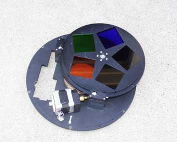
UBVRI filters
Different instruments have slightly different filters from different manufacturers. Here is an example.
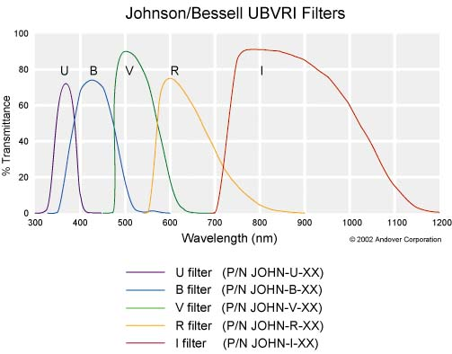
UBVRI
We don’t have to memorise this for the course.
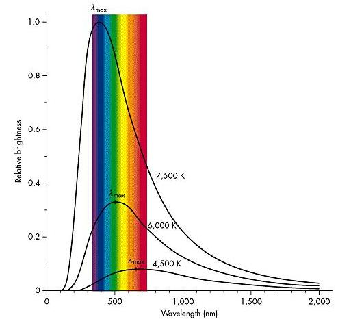
spectrum
## Colour Index
The colour index is the numerical difference in magnitudes between measurements made in two wavelength bands
To measure the index, measurements are made successively through two different filters, such as U and B, or B and V to give the usual colour indices, e.g.
B - V Difference between magnitude in Blue and Visible bands
V - I Difference between magnitude in Visible and Near-Infrared bands
Note that the bolometric luminosity is not measured by any of the filters! In practice, care must be taken when doing physics calculations using the total Luminosity to make sure that a correction is applied, which depends on the temperature of the star. For this course we will ignore this, and you can assume that luminosity problems will be set with the bolometric magnitude. But in historical sources the V-band magnitude is used.
7.1 Colour Index Examples
The Sun, which appears yellowish, has - U band apparent magnitude -25.96 - B band apparent magnitude -26.09 - V band apparent magnitude - 26.74 - So the B-V colour index for the Sun is +0.65
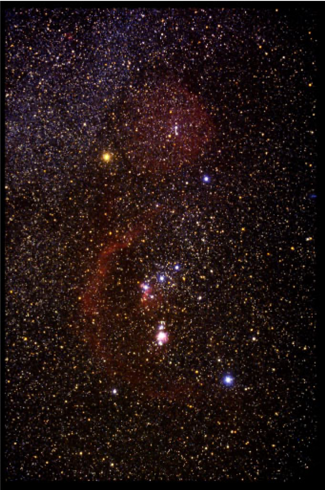
Rigel which appears bluish has - B band apparent magnitude 0.09 - V band apparent magnitude 0.12 - So the B-V colour index for Rigel is -0.03
So the smaller the colour index (i.e lower position on a number scale that ranges from positive, through zero, into negative numbers), the more blue (and hotter) the star
From the Planck curve you would think that any given star surface temperature T would have automatically determined values of the colour indices
However real stars are a bit more complicated than ideal black bodies ….
## Colour Index and the HR diagram - Colour Index was the original quantity plotted along the x-axis in the HR-diagram - This is why \(\log_{10}T\) decreases going from left to right! - The exact relationship between Colour Index and effective temperature is not simple, but we can state it approximately as :
What do we see? - Dark absorption lines, superimposed on the expected continuous spectrum - The lines are fingerprints of the elements present in the Sun’s atmosphere
To go further we need to answer one of our first questions: - What are the stars made of?
Stars are mainly hydrogen
Hydrogen emits light only at particular emission lines when excited in the laboratory.
So why do we see a continuous spectrum?
Why do we see absorption lines in the spectrum of stars?
Why do we see emission lines from regions of the sky nears stars? (Emission nebulae)
7.3 Light from the Sun – early observations
1802 : Wollaston discovered the dark lines in the Solar spectrum
1814 : Fraunhofer catalogued 475 of these lines
They showed that the continuum light from the Sun was absorbed at discrete wavelengths - 1860 : Kirchhoff and Bunsen published rules for the production of these spectral lines
Gustav Kirchoff studied the three types of spectra seen under different conditions, and, in 1860, derived laws to explain them
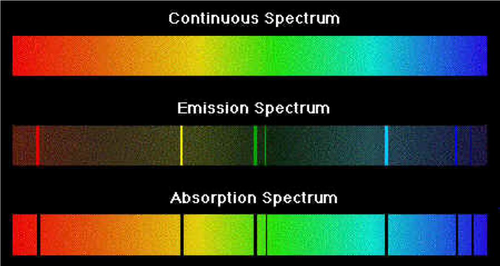
Emission and Absoption spectra
7.4 Kirchoff’s Laws
1. A hot and opaque solid, liquid or highly compressed gas emits a continuous blackbody as-named by Kirchhoff) spectrum with no spectral lines
2. A hot, transparent gas, illuminated by a continuum source, produces a spectrum of bright emission lines
3. If a continuous spectrum passes through a transparent gas at a lower temperature, the cooler gas will absorb at characteristic wavelengths resulting in dark absorption lines
For 2 and 3, the number and colours of the lines depends on the elements present in the gas
Kirchoff produced these laws without knowing about the energy levels in atoms!
8 Spectral type of stars
By 1890 stars were classified in order of the line strength of hydrogen :
A, B, C, . . . . . . M, N, O, P
A had the strongest line strength
P had the weakest line strength
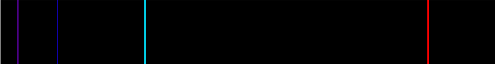
Visible Hydrogen emission lines (Balmer Series)
By the end of the 19th Century it was possible to photograph the spectra of light from many stars. - Annie Jump Cannon (1863 - 1941) working at the Harvard College Observatory from 1896 examined the spectra of nearly 400,000 stars! - She found that the spectra of light from stars fell into natural categories based on the strength of certain key line features (principally the Hydrogen lines) - She created a much more simple classification system based on this, the Harvard Classification, which is still in use today - In this system every star has a letter that describes its colour, known as its spectral class.
This classification was simpler, but it was not understood what caused the lines.
In 1925 Cecilia Payne Gaposchkin put the pieces together and showed
that stars are mainly composed of Hydrogen and Helium
that the spectral class and line behaviour that Cannon observed were related to temperature
The Harvard classification was therefore a sequencing of stars from hottest to coolest
So while the Colour Index is a straightforward objective measure of colour, it can be more useful to talk about the spectral class (or type) of a star.
8.1 Harvard Spectral Classification
The Harvard Classification Scheme considers the changes in other lines as well as hydrogen It gives a sequence indicating source temperature:
O, B, A, F, G, K, M
‘O’ stars are hot and blue
‘M’ stars are cool and red
Temperature decreases from left to right
The odd letter sequence is a rearrangement in temperature order of an older classification scheme
Under this scheme, the Sun is a G-type star
8.2 Harvard Classification - mnemonics
Traditional: Oh, Be A Fine Girl/Guy, Kiss Me
Local: Old Blind Astronomers From Glasgow Keep Mice
Personal: Oil Butter And Fat Gonna Kill Me
Make your own and remember it!
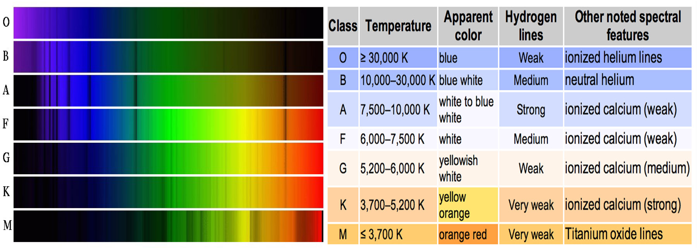
9 Harvard spectral classes
O : Hottest, blue-white stars
Few lines, strong He II absorption (sometimes emission) lines
B : Hot, blue-white stars
He I absorption lines strongest at B2, H II (Balmer) absorption lines becoming stronger
A : White stars
Balmer absorption lines strongest at A0, becoming weaker later
F : Yellow-white stars
Ca II lines continue to strengthen as Balmer lines continue to weaken
Neutral metal absorption lines (Fe I, Cr I
G : Yellow stars
Solar-type spectra
Ca II lines continue to strengthen
Fe I and other neutral metal lines continue to strengthen
K : Cool orange stars
Ca II, H and K lines strongest at K0, becoming weaker later
Spectra dominated by metal absorption lines
M : Coolest red stars
Spectra dominated by molecular absorption bands, especially titanium oxide (TiO)
Neutral metal absorption lines remain strong
9.1 Harvard Subclasses
Each type is subdivided into 10 subclasses. These reflect gradual temperature changes
e.g. A0, A1, A2. . . . . . A7, A8, A9
0 represents the hotter end of a subclass
9 represents the cooler end of a subclass
e.g O9 is next to B0
Allocation of subtype depends on line strengths and ratios. - The Sun is a G2-type star. - Others: Vega A0, Rigel B8, Polaris F8, Betelgeuse M2.
## Morgan-Keenan Luminosity Class
The Harvard classification scheme does not completely describe a star as it cannot distinguish between stars with the same temperature but with different luminosities.
For example it cannot distinguish between main sequence (dwarf) stars, giant stars and supergiant stars - Think of the different stars that could lie on a vertical (i.e. constant temperature) line towards the right-hand side of the HR diagram.
The Morgan-Keenan luminosity class (MK class) was established to add discrimination on the basis of luminosity - In its current form, the MK class system ranges from (roman numeral) I to VII - Class I is subdivided I-O (hypergiant star), through Ia (bright supergiant) and 1b (dim supergiant) - Then there are classes II, III , IV and V (going from bright giants down to main sequence dwarfs) - The systems ends with classes VI (sub-dwarf) and VII (white dwarf)
9.2 HR diagram with MK luminosity classes
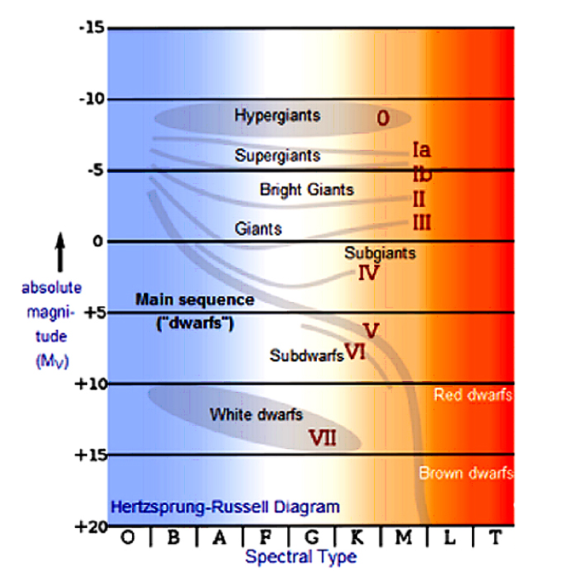
HR with MK class
Luminosity classes are determined (mainly) from the observed widths of spectral lines.
Several effects can cause broadening of the spectral lines we observe
Common to the broadening effects is their dependence on star temperature and pressure
High pressure and temperature cause atoms to collide more frequently, broadening their spectral (line) emission the effect is seen particularly in hot, dense stars like White Dwarfs
9.3 Mass-luminosity relationship
Observations from binary systems (where masses can be determined) indicate a relationship between mass and luminosity - This is only true for Main Sequence stars We find:
The value of \(\alpha\) depends on the fit used in the data, but is roughly \(3.0 \le \alpha \le 3.5\).
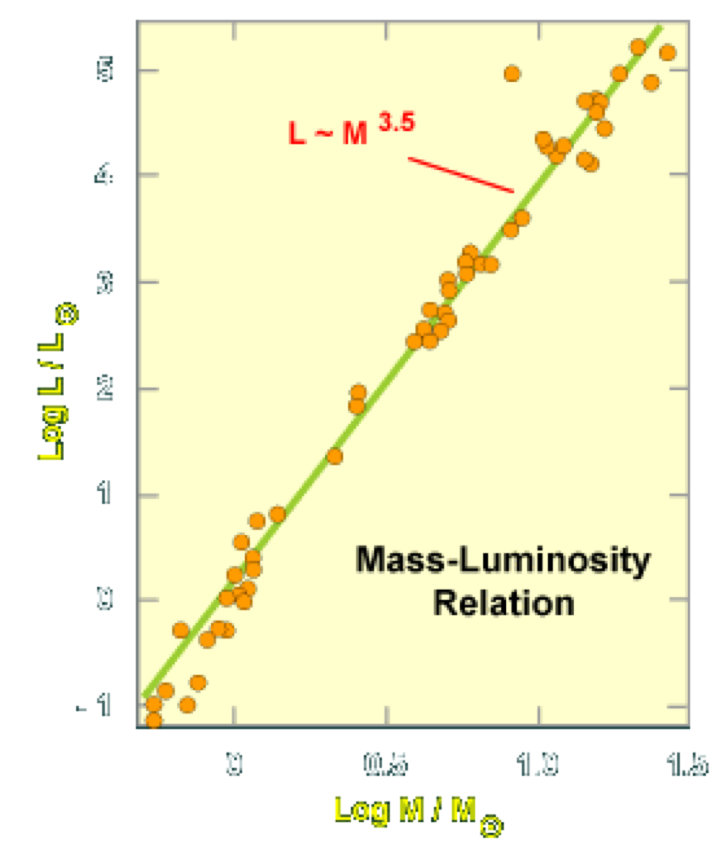
Mass-Luminosity
9.4 Mass-luminosity and the HR diagram
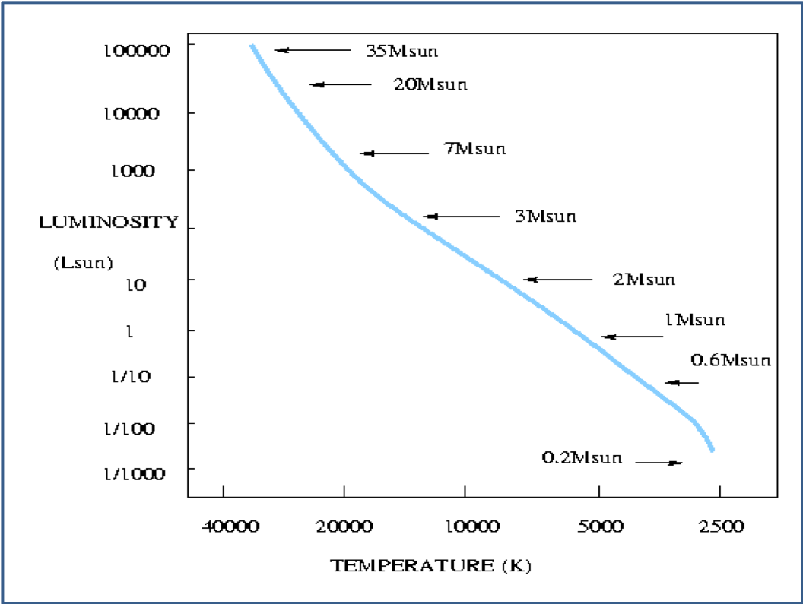
ML in the HR
The Mass-Luminosity relationship holds only for Main Sequence stars
The more massive a star, the more luminous it is
A star only 20 times the mass of the Sun would be around 35000 times as luminous as the Sun
The most massive stars are at the upper left hand part of the HR-diagram
The least massive stars are at the bottom right
The Sun, a G2V star, sits around the middle of the Main Sequence
9.5 Explaining the mass-luminosity relationship
Massive stars have large gravitational compression of their cores because of the large mass of the outer layers
For equilibrium, massive stars therefore need high radiation pressure pushing outward to balance the large gravitational compression
The high thermal pressure is provided by high temperature in a massive star’s core – higher than the temperature found in low-mass star
The nuclear reaction rate in a star is very sensitive to the core temperature even a slight increase in temperature makes the nuclear reactions occur at a MUCH higher rate. - So a slight increase in the mass of the star produces a large increase in the star’s luminosity
## Mass-Luminosity Relationship – implication
The luminosity is a very strong function of mass : \(3.0\le\alpha\le3.5\) is quite big.
There are great implications for how long stars live on the Main Sequence
Massive stars have very short lifetimes because they burn up their fuel more quickly than less massive stars
We will return to this when we study stellar evolution.
Source Code
---title: Classifying starsauthor: name: Dr Rosaria Lena affiliation: rosaria.lena@glasgow.ac.ukdate: last-modifieddate-format: shortaffiliation-title: emaildescription: _Lecture 3_. title-block-banner: truejupyter: python3execute: echo: true freeze: auto--------------__Topics__- Hertzsprung-Russell diagrams- The main sequence- White dwarfs and red giants- colour index- spectroscopy- spectral lines and Kirchoff's laws- Classification systems - Harvard: OBAFGKM - Morgan-Keenan Luminosity class- How massive are stars?- Mass-luminosity relation# Types of StarsWe have developed relationships between the radius, luminosity and temperature of stars (@eq-total-luminosity).Since the three are related, not all combinations are possible. Let's see what we can expect to find when we look at real stars.Stars have very wide ranges of luminosity, so it will be helpful to work with the logarithm of @eq-total-luminosity.\begin{align}L &= 4\pi R^2 \sigma T^4 \\\log_{10} L &= \log_{10}(4\pi\sigma) + 2\log_{10}(R) + 4\log_{10}T\end{align}We can plot a graph of $y=\log_{10} L$ against $x=-\log_{10} T$ for some value of $R,$ and we should get a straight line.We will see shortly why there is a negative sign```{python}#| slideshow: {slide_type: subslide}import numpy as npfrom numpy import linspace, logspace, log10, pifrom matplotlib import pyplot as pltplt.figure(dpi=300)sigma =5.671e-8for r in [1e10, 5e9, 1e9, 5e8]: # radius, m T=logspace(log10(1000),log10(20000),100) L=4.0*pi*sigma*r**2*T**4#L = 10**(log10(4.0*pi*sigma) + 2*log10(r) + 4*log10(T)) plt.loglog(T,L, label=f'R={r:3.0e} m')#plt.plot(-log10(T), log10(L), label=f'r={r:3.0e} m')plt.xlim(plt.xlim()[::-1])plt.xlabel('$T$ [K]')plt.ylabel('$L$ [W]')plt.title('Luminosity - temperature')plt.grid(True,which='both',alpha=0.4)plt.legend();```We see that for each radius $R$ there is a straight line relationship when plotted on logarithmic axes.Lower radii lie on lines toward the bottom of the plot.Where do stars fall on this plot?## Hertzsprung and Russell Two astronomers independently devised ways to determine the luminosity of stars- Ejnar HERTZSPRUNG (Denmark 1873 – 1967)- Henry Norris RUSSELL (USA, 1877 – 1957)They constructed the plot now known as a Hertzsprung-Russell Diagram universally called an HR-Diagram for short- Stars are found to cluster in distinct areas of the HR diagram- 80% to 90% of stars lie on a strip called the __Main Sequence__- There are other branches of stars: __White Dwarfs, Giants and Supergiants__- Remember that the temperature (x-axis) decreases as we go from left to right- We use the HR-diagram to understand stellar evolution_Why are we justified in giving the names "dwarfs" and "giants" to these classes?_### A real HR diagram{#fig-Gaia-HR}- Over 1.3 billion stars contained in Gaia Data Release 2- Note the colour scale is non-linear - white/yellow regions must be more populated- Axes are colour index ($G_{BP} - G_{RP}$ Blue - Red magnitude) vs absolute magnitude ($M_G$): We know these are related to temperature and luminosity- We can see the main sequence, giants, and white dwarfs clearly- There are other less populated clusters too: we will see what they mean for stellar evolutionHere is an annotated HR diagram showing temperature and luminosity along with magnitude and colour index# Interpretation of the HR diagram- Only certain combinations of luminosity and temperature are allowed- The HR diagram shows stars with a wide range of ages.- Most stars sit on the main sequence- Let's assume that stars move around on the HR diagram, from one class to another, as as they evolveWhat does this tell us?- We are looking at a snapshot of the stellar population- Stars follow 'tracks' on the HR diagram over their lifetime- Clusters in the HR diagram are stars at similar stages of their lives- The number of stars in each part of the diagram is proportional to the duration of that stage of their evolution# The Main Sequence- The main sequence is the most populated part of the HR diagram (80-90% of stars). We can deduce that stars spend most of their lives on the main sequence.- The main sequence has most variation from top-left to botton-right, along a line of roughly constant radius. (This is not exact as the is a range of stellar radii)- The top-left blue stars are hotter and more luminous, and therefore require more power- The bottom-right red stars are much dimmer and cooler- Hot blue stars are using up their fuel much more quickly- We will see later the implications for their evolution## The main sequence: limitsThere are two cut-offs to the main sequence:- At the top: extremely luminous stars blow off material from their surface through _radiation pressure_, naturally limiting their mass- At the bottom: very cool red stars are not hot enough to begin nuclear reactions: the temperature in their core is too lowWe can suppose that luminous blue stars have high mass and dim red stars low mass, and that this is the main determining factor of where a star appears on the main sequence. (We will check this theoretically later)## The main sequence: mass and luminosity- Later we will see that luminosity is increased with higher mass: $L\propto M^\alpha$.We can estimate the time a star spends on the main sequence with\begin{align}\mathrm{Lifetime} = \frac{\mathrm{energy\ available}}{\mathrm{luminosity}} \propto \frac{M}{M^\alpha}\end{align}__The most massive stars spend the least amount of time on the main sequence__## Giants and SupergiantsGiants and supergiants sit above the main sequence in the top-right- Large $L$ but low $T$, so $r$ must be very large: 'giants'- This area is less populated than the main sequence, so stars spend less of their lives in this phase- We will see that they reach this stage of their life after they spend time on the main sequence- We need to explain what causes the radius of the star to increase!# White dwarfs- White dwarfs sit at the bottom-left of the HR diagram- Below the main sequence, so radius smaller: 'dwarfs'- $L\sim 0.01 L_\odot$, none visible to the naked eye- $T\sim 16000\,$K.- $R\sim R_\odot /70$ (similar size to the Earth)- We need to explain why the radius is so small!- How do they get to be so hot?We need Stellar Evolution to explain all this!# Classification schemesWe have seen that on the main sequence, there are a range of star colours. We can use this to classify them.- Hot stars appear blue, cool stars appear red- We can quantify this by measuring the flux (magnitude) in different wavelength bands- The Photometric system divides the spectrum into commonly used bands- A common convention: - Ultraviolet (U-band): centred on 350 nm - Blue (B-band): centred on 440 nm - Visible (V-band): centred on 550 nm - Red (R-band): centred around 600 nm - Near-infrared (I-band): around 800 nmFilters are placed over the telescope to select a band.Here is an photograph of a set of filters.Different instruments have slightly different filters from different manufacturers. Here is an example.We don't have to memorise this for the course.## Colour Index- The colour index is the numerical difference in magnitudes between measurements made in two wavelength bands- To measure the index, measurements are made successively through two different filters, such as U and B, or B and V to give the usual colour indices, e.g.- __B - V__ Difference between magnitude in Blue and Visible bands- __V - I__ Difference between magnitude in Visible and Near-Infrared bandsNote that the bolometric luminosity is not measured by any of the filters! In practice, care must be taken when doing physics calculations using the total Luminosity to make sure that a correction is applied, which depends on the temperature of the star. For this course we will ignore this, and you can assume that luminosity problems will be set with the bolometric magnitude. But in historical sources the V-band magnitude is used.## Colour Index ExamplesThe Sun, which appears yellowish, has- U band apparent magnitude -25.96- B band apparent magnitude -26.09- V band apparent magnitude - 26.74- So the B-V colour index for the Sun is +0.65<imgstyle="float: right; max-height: 500px; position:relative;"src="img/Rigel.png">Rigel which appears bluish has- B band apparent magnitude 0.09- V band apparent magnitude 0.12- So the B-V colour index for Rigel is -0.03- So the smaller the colour index (i.e lower position on a number scale that ranges from positive, through zero, into negative numbers), the more blue (and hotter) the star- From the Planck curve you would think that any given star surface temperature T would have automatically determined values of the colour indices- However real stars are a bit more complicated than ideal black bodies ….## Colour Index and the HR diagram- Colour Index was the original quantity plotted along the x-axis in the HR-diagram- This is why $\log_{10}T$ decreases going from left to right!- The exact relationship between Colour Index and effective temperature is not simple, but we can state it approximately as :$$B-V \approx \frac{7000\, \mathrm{K}}{T} - 0.56$$## Light from the Sun<imgsrc="img/solarspectrum_noao.jpg"style="float:left; padding: 0.5cm">__What do we see?__- Dark absorption lines, superimposed on the expected continuous spectrum- The lines are fingerprints of the elements present in the Sun's atmosphereTo go further we need to answer one of our first questions:- What are the stars made of?- Stars are mainly hydrogen- Hydrogen emits light only at particular __emission lines__ when excited in the laboratory.- So why do we see a continuous spectrum?- Why do we see absorption lines in the spectrum of stars?- Why do we see emission lines from regions of the sky nears stars? (Emission nebulae)## Light from the Sun – early observations- 1802 : Wollaston discovered the dark lines in the Solar spectrum- 1814 : Fraunhofer catalogued 475 of these linesThey showed that the continuum light from the Sun was absorbed at discrete wavelengths- 1860 : Kirchhoff and Bunsen published rules for the production of these spectral linesGustav Kirchoff studied the three types of spectra seen under different conditions, and, in 1860, derived laws to explain them## Kirchoff's Laws- __1.__ A hot and opaque solid, liquid or highly compressed gas emits a continuous blackbody as-named by Kirchhoff) spectrum with no spectral lines - __2.__ A hot, transparent gas, illuminated by a continuum source, produces a spectrum of bright emission lines- __3.__ If a continuous spectrum passes through a transparent gas at a lower temperature, the cooler gas will absorb at characteristic wavelengths resulting in dark absorption linesFor 2 and 3, the number and colours of the lines depends on the elements present in the gas- Kirchoff produced these laws without knowing about the energy levels in atoms!# Spectral type of starsBy 1890 stars were classified in order of the line strength of hydrogen : A, B, C, . . . . . . M, N, O, P- _A_ had the strongest line strength- _P_ had the weakest line strengthVisible Hydrogen emission lines (Balmer Series)<imgsrc="img/AnnieCannon.png"style="float: left; max-height: 500px; position:relative; padding: 0.5cm; max-width: 50%">By the end of the 19th Century it was possible to photograph the spectra of light from many stars.- Annie Jump Cannon (1863 - 1941) working at the Harvard College Observatory from 1896 examined the spectra of nearly 400,000 stars!- She found that the spectra of light from stars fell into natural categories based on the strength of certain key line features (principally the Hydrogen lines)- She created a much more simple classification system based on this, the __Harvard Classification__, which is still in use today- In this system every star has a letter that describes its colour, known as its _spectral class_.<imgsrc="img/Gaposchkin.jpg"style="float: left; max-height: 500px; position:relative; padding: 0.5cm;">- This classification was simpler, but it was not understood what caused the lines.- In 1925 Cecilia Payne Gaposchkin put the pieces together and showed - that __stars are mainly composed of Hydrogen and Helium__ - that the spectral class and line behaviour that Cannon observed were related to temperature - The Harvard classification was therefore a sequencing of stars from hottest to coolestSo while the Colour Index is a straightforward objective measure of colour, it can be more useful to talk about the __spectral class__ (or type) of a star.## Harvard Spectral ClassificationThe Harvard Classification Scheme considers the changes in other lines as well as hydrogenIt gives a sequence indicating source temperature: O, B, A, F, G, K, M- ‘O’ stars are hot and blue- ‘M’ stars are cool and red- Temperature decreases from left to right- The odd letter sequence is a rearrangement in temperature order of an older classification scheme- Under this scheme, the Sun is a G-type star## Harvard Classification - mnemonics- Traditional: Oh, Be A Fine Girl/Guy, Kiss Me- Local: Old Blind Astronomers From Glasgow Keep Mice- Personal: Oil Butter And Fat Gonna Kill MeMake your own and remember it!<imgsrc="img/BalmerSeries.png"width=47%style="float:left;"># Harvard spectral classes- O : Hottest, blue-white stars - Few lines, strong He II absorption (sometimes emission) lines- B : Hot, blue-white stars - He I absorption lines strongest at B2, H II (Balmer) absorption lines becoming stronger- A : White stars - Balmer absorption lines strongest at A0, becoming weaker later- F : Yellow-white stars - Ca II lines continue to strengthen as Balmer lines continue to weaken - Neutral metal absorption lines (Fe I, Cr I- G : Yellow stars - Solar-type spectra - Ca II lines continue to strengthen - Fe I and other neutral metal lines continue to strengthen- K : Cool orange stars - Ca II, H and K lines strongest at K0, becoming weaker later - Spectra dominated by metal absorption lines- M : Coolest red stars - Spectra dominated by molecular absorption bands, especially titanium oxide (TiO) - Neutral metal absorption lines remain strong## Harvard SubclassesEach type is subdivided into 10 subclasses.These reflect gradual temperature changes e.g. A0, A1, A2. . . . . . A7, A8, A9- 0 represents the hotter end of a subclass- 9 represents the cooler end of a subclasse.g O9 is next to B0Allocation of subtype depends on line strengths and ratios.- The Sun is a G2-type star.- Others: Vega A0, Rigel B8, Polaris F8, Betelgeuse M2.## Morgan-Keenan Luminosity ClassThe Harvard classification scheme does not completely describe a star as it cannot distinguish between stars with the same temperature but with different luminosities.For example it cannot distinguish between main sequence (dwarf) stars, giant stars and supergiant stars- Think of the different stars that could lie on a vertical (i.e. constant temperature) line towards the right-hand side of the HR diagram.The Morgan-Keenan luminosity class (MK class) was established to add discrimination on the basis of luminosity- In its current form, the MK class system ranges from (roman numeral) I to VII- Class I is subdivided I-O (hypergiant star), through Ia (bright supergiant) and 1b (dim supergiant) - Then there are classes II, III , IV and V (going from bright giants down to main sequence dwarfs)- The systems ends with classes VI (sub-dwarf) and VII (white dwarf)## HR diagram with MK luminosity classes- Luminosity classes are determined (mainly) from the observed widths of spectral lines.- Several effects can cause broadening of the spectral lines we observe - Common to the broadening effects is their dependence on star temperature and pressure - High pressure and temperature cause atoms to collide more frequently, broadening their spectral (line) emission the effect is seen particularly in hot, dense stars like White Dwarfs ## Mass-luminosity relationshipObservations from binary systems (where masses can be determined) indicate a relationship between mass and luminosity- This is only true for Main Sequence starsWe find: $$\frac{L}{L_\odot}\approx \left(\frac{M}{M_\odot}\right)^\alpha$$The value of $\alpha$ depends on the fit used in the data, but is roughly $3.0 \le \alpha \le 3.5$.## Mass-luminosity and the HR diagram- The Mass-Luminosity relationship holds only for Main Sequence stars- The more massive a star, the more luminous it is - A star only 20 times the mass of the Sun would be around 35000 times as luminous as the Sun- The most massive stars are at the upper left hand part of the HR-diagram- The least massive stars are at the bottom right- The Sun, a G2V star, sits around the middle of the Main Sequence## Explaining the mass-luminosity relationship- Massive stars have large gravitational compression of their cores because of the large mass of the outer layers- For equilibrium, massive stars therefore need high radiation pressure pushing outward to balance the large gravitational compression- The high thermal pressure is provided by high temperature in a massive star’s core – higher than the temperature found in low-mass starThe nuclear reaction rate in a star is very sensitive to the core temperatureeven a slight increase in temperature makes the nuclear reactions occur at a MUCH higher rate.- So a slight increase in the mass of the star produces a large increase in the star’s luminosity## Mass-Luminosity Relationship – implication- The luminosity is a very strong function of mass : $3.0\le\alpha\le3.5$ is quite big.- There are great implications for how long stars live on the Main Sequence- Massive stars have very short lifetimes because they burn up their fuel more quickly than less massive starsWe will return to this when we study stellar evolution.